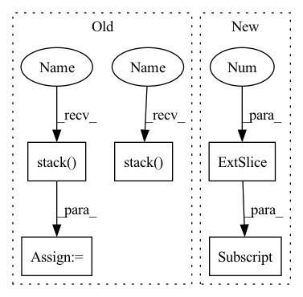

Pattern ID :1458
Before Change
h.append(
torch.einsum(
"bd,bd->b",
torch.stack( h[idx:], 1) ,
c1[:, idx:],
)
/ n
)
h = torch .stack( h, 1)
return h
After Change
c1 = torch.flip(c1, [1])
h = torch.empty((c.shape[0], self.impulse_response_length), device=c.device)
h[:, 0] = torch.exp(c0)
for n in range(1, self.impulse_response_length):
s = n - self.cep_order
h[:, n] = (In pattern: SUPERPATTERN
Frequency: 3
Non-data size: 5
Instances Fragment ID: 4232834
Project Name: sp-nitech/diffsptk
Commit Name: 95d7da9e29f52cdd75988edd56bb731ee3ec8548
Time: 2022-03-11
Author: takenori.yoshimura24@gmail.com
File Name: diffsptk/c2mpir.py
M Class Name: CepstrumToImpulseResponse
N Class Name: CepstrumToImpulseResponse
M Method Name: forward(2)
N Method Name: forward(2)
M Parent Class: nn.Module
N Parent Class: nn.Module
M File Name: diffsptk/c2mpir.py
N File Name: diffsptk/c2mpir.py
M Start Line: 58
M End Line: 74
N Start Line: 58
N End Line: 73
Before Change
assert greedy or len(mel_outputs) == T_decoder
// Back to batch first
attn_scores = torch.stack( attn_scores) .transpose(0, 1)
mel_outputs = torch.stack(mel_outputs).transpose(0, 1).contiguous()
stop_tokens = torch.stack( stop_tokens) .transpose(0, 1).squeeze(2)
// (B, T", mel_dim*r) -> (B, T, mel_dim)
mel_outputs = mel_outputs.reshape(B, -1, self.mel_dim)After Change
current_input = initial_input
while True:
if t > 0:
current_input = mel_outputs[-1][:, -1, :] if greedy else inputs[t - 1]
t += self.r
// Prenet Fragment ID: 4232835
Project Name: thuhcsi/tacotron
Commit Name: fea9ec535ec373aad564646f4f292fbee0217c29
Time: 2021-03-18
Author: johnson.tsing@gmail.com
File Name: model/tacotron2.py
M Class Name: Decoder
N Class Name: Decoder
M Method Name: forward(4)
N Method Name: forward(4)
M Parent Class: nn.Module
N Parent Class: nn.Module
M File Name: model/tacotron2.py
N File Name: model/tacotron2.py
M Start Line: 127
M End Line: 224
N Start Line: 127
N End Line: 216
Before Change
assert greedy or len(mel_outputs) == T_decoder
// Back to batch first
attn_scores = torch.stack( attn_scores) .transpose(0, 1)
mel_outputs = torch.stack( mel_outputs) .transpose(0, 1).contiguous()
stop_tokens = torch.stack(stop_tokens).transpose(0, 1).squeeze(2)
// (B, T", mel_dim*r) -> (B, T, mel_dim)After Change
current_input = initial_input
while True:
if t > 0:
current_input = mel_outputs[-1][:, -1, :] if greedy else inputs[t - 1]
t += self.r
// Prenet Fragment ID: 4232839
Project Name: thuhcsi/tacotron
Commit Name: fea9ec535ec373aad564646f4f292fbee0217c29
Time: 2021-03-18
Author: johnson.tsing@gmail.com
File Name: model/tacotron.py
M Class Name: Decoder
N Class Name: Decoder
M Method Name: forward(4)
N Method Name: forward(4)
M Parent Class: nn.Module
N Parent Class: nn.Module
M File Name: model/tacotron.py
N File Name: model/tacotron.py
M Start Line: 87
M End Line: 187
N Start Line: 88
N End Line: 180
Before Change
h.append(
torch.einsum(
"bd,bd->b",
torch.stack( h[idx:], 1) ,
c1[:, idx:],
)
/ n
)
h = torch.stack( h, 1)
return h
After Change
c1 = torch.flip(c1, [1])
h = torch.empty((c.shape[0], self.impulse_response_length), device=c.device)
h[:, 0] = torch.exp(c0)
for n in range(1, self.impulse_response_length):
s = n - self.cep_order
h[:, n] = ( Fragment ID: 4232846
Project Name: sp-nitech/diffsptk
Commit Name: 95d7da9e29f52cdd75988edd56bb731ee3ec8548
Time: 2022-03-11
Author: takenori.yoshimura24@gmail.com
File Name: diffsptk/c2mpir.py
M Class Name: CepstrumToImpulseResponse
N Class Name: CepstrumToImpulseResponse
M Method Name: forward(2)
N Method Name: forward(2)
M Parent Class: nn.Module
N Parent Class: nn.Module
M File Name: diffsptk/c2mpir.py
N File Name: diffsptk/c2mpir.py
M Start Line: 58
M End Line: 74
N Start Line: 58
N End Line: 73